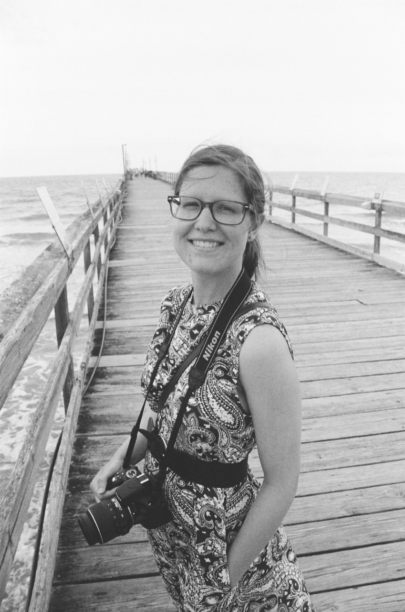

My science, interests, and more!
Download Curriculum Vitae: [PDF] Updated 19 April 2023
Hi! I'm Charlotte and I am the Astronomy & Astrophysics Prize Postdoctoral Fellow at Iowa State University. I got my Ph.D. in Physics at the University of Notre Dame where I worked on supernova cosmology under Dr. Peter Garnavich. My research focuses on understanding type Ia supernovae progenitors and what effects the intrinsic variations in type Ia supernovae have on the Hubble constant measurement. Other research interests of mine include light echoes, white dwarfs, brown dwarfs, scientific writing/communication, and physics education.
I got my B.S. in Physics (with a minor in astronomy) from Hofstra University in 2016. While I was there, I worked with Dr. Stephen Lawrence studying light echoes around recurrent novae and SN 1987A. I also participated in a REU in 2015 at the University of Oklahoma where I worked with Dr. Mukremin Kilic studying extremely low mass white dwarfs. I then started as a graduate student at the University of Notre Dame in the summer of 2016 and I successfully defended my thesis in the summer of 2022.
As a graduate student, I was heavily involved with the Graduate Physics Society, a graduate student-run organization within the department that provides resources to help foster community between students across all subfields of physics and to help fill gaps in their professional skills. I also participated in and helped organize many of the astronomy-related outreach activities on or near campus, such as public observing nights and science demos. Recently, I've been focusing on my scientific writing and I worked for two years as the Physics Research Writing Consultant for the department.
Outside of physics, I enjoy horseback riding, photography (including astrophotography), playing pool, traveling, and hanging out with family. I grew up in North Carolina, so I am a big UNC basketball fan and I try to go to ND/UNC/ISU football and basketball games when I get the chance. I've also been getting into baseball and I enjoy attending Iowa/South Bend Cubs games.
If you have any questions (or just want to say hi), please contact me!